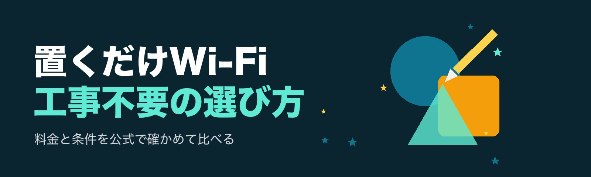
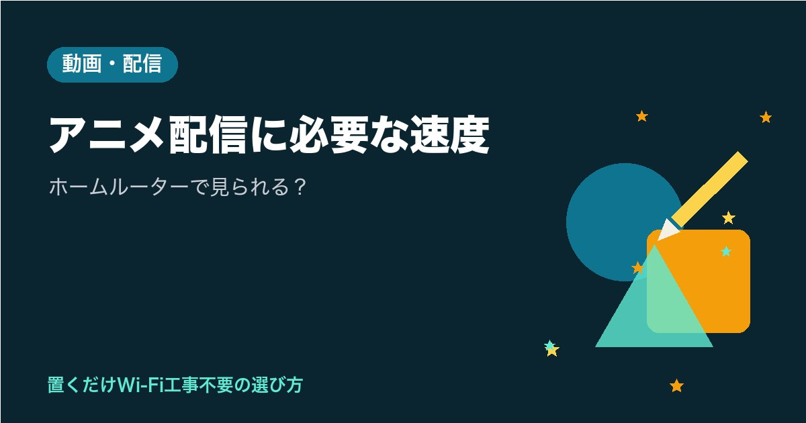
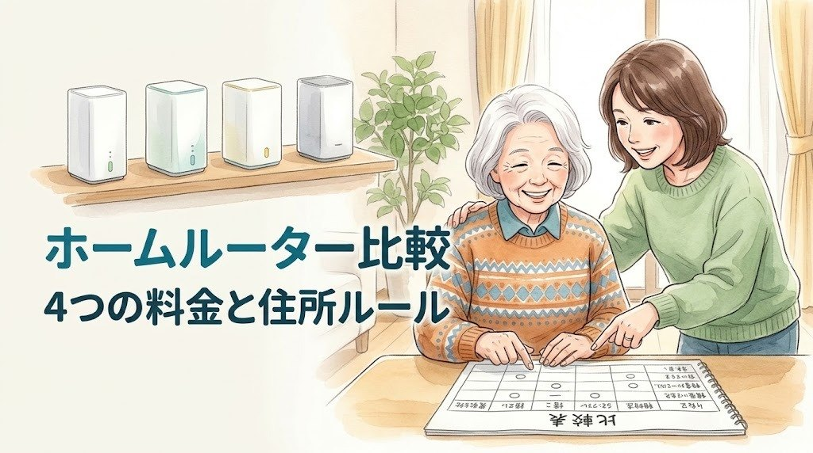
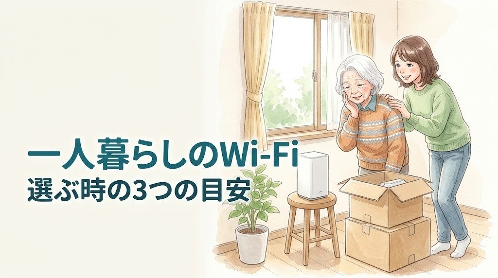
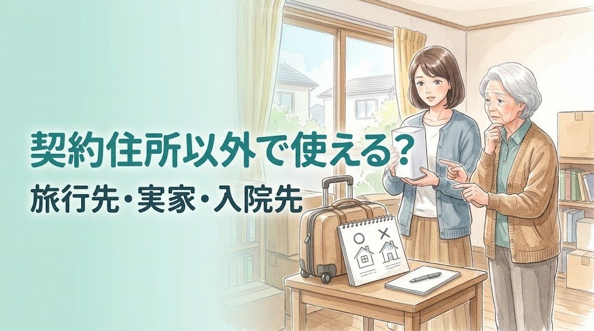
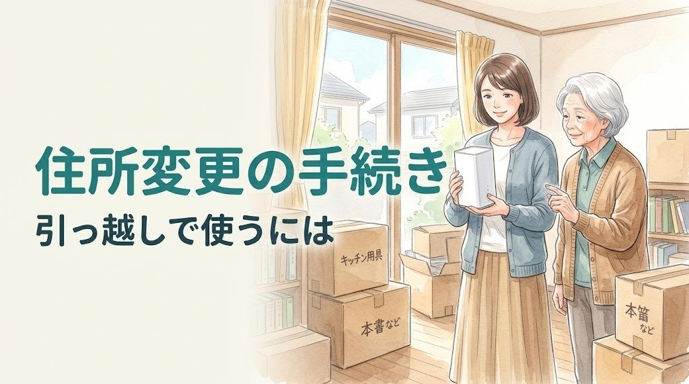
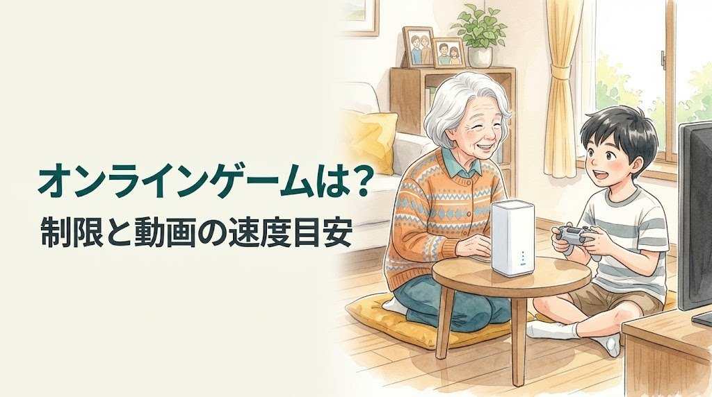

実家のWi-Fiガイド
実家に、
工事なしでWi-Fiを。
離れて暮らすお母さまと、顔を見て話せたら安心ですよね。コンセントにさすだけの「置くだけWi-Fi（ホームルーター）」なら、回線工事の立ち会いがいらず、帰省した日に一緒に始められます。このサイトでは、ご実家に置くときの名義や住所のルール、60歳以上向けの割引、月々の料金、やめたくなった時のことまで、あなたが3分で判断できるように表で比べます。料金や条件は各社の公式ページと重要事項説明書で確かめ、記事ごとに確認日を書いています。
工事の日を決めて、家で待つ段取り
お母さまが触る設定は、届いた日の1回だけ
- ①お母さま名義で申し込む本人確認書類もお母さまのもの
- ②帰省の日に届ける受け取りの日を合わせる
- ③一緒にさして設定コンセントとQRコード
はじめての方へ：まず読みたい記事
 実家・見守り2026-10-27
実家・見守り2026-10-27実家のWi-Fiおすすめ｜工事なしで親の家にネットを入れる3ステップ
実家のWi-Fiのおすすめを、工事なしで親の家にネットを入れる3ステップで整理しました。名義はお母さま、本人確認書類もお母さまのもの、帰省した日に一緒にやる段取り、各社の住所のルールの違い、向かない場合の注意まで表でまとめています。
 実家・見守り2026-10-27
実家・見守り2026-10-27高齢者のWi-Fiおすすめ｜一人暮らしのお母さまが困らない選び方
高齢者のWi-Fiおすすめを、一人暮らしのお母さまが困らないかで選ぶ方法をまとめました。コンセントにさすだけか、止まった時に電話で伝えられるか、毎月の支払いと解約金がはっきりしているか、名義をどうするか。SoftBank Air・ドコモ・au・UQ WiMAX・楽天を表で比べています。
 実家・見守り2026-10-27
実家・見守り2026-10-27見守りカメラと高齢者のWi-Fi｜実家に置く前に確かめたい5つのこと
見守りカメラと高齢者のWi-Fiについて、実家に置く前に確かめたい5つのことをまとめました。家のWi-Fiにつなぐカメラとwifi不要のSIM型の違い、お母さまの同意と置く場所、ホームルーターの名義・混雑時の速度・電源と置き場所を表で整理しています。
 実家・見守り2026-10-27
実家・見守り2026-10-27Wi-Fiのシニア割｜ソフトバンクエアーの60歳以上向け割引の条件と月額
Wi-Fiのシニア割として、ソフトバンクエアーの60歳以上向け「スマートライフ割（O-60）」の条件と月額を整理しました。年齢は契約者名義で判定、月2,090円割引×24か月、12月改定後は割引後3,608円。端末購入の条件、併用の注意、おうちのでんわセット割も表で。
 はじめて2026-10-26
はじめて2026-10-26工事不要Wi-Fiのデメリット｜ソフトバンクエアーが向かない人5つ
工事不要Wi-Fiのデメリットを、ソフトバンクエアーの重要事項説明書をもとに「向かない人5つ」で整理しました。契約住所以外で使えない、混雑時の速度制限、一部オンラインゲームの制限、端末代の残り、5Gエリアの広さまで。最後に向く人も短くまとめています。
新着記事
実家・見守り2026-10-27実家のWi-Fiおすすめ｜工事なしで親の家にネットを入れる3ステップ
実家のWi-Fiのおすすめを、工事なしで親の家にネットを入れる3ステップで整理しました。名義はお母さま、本人確認書類もお母さまのもの、帰省した日に一緒にやる段取り、各社の住所のルールの違い、向かない場合の注意まで表でまとめています。
実家・見守り2026-10-27高齢者のWi-Fiおすすめ｜一人暮らしのお母さまが困らない選び方
高齢者のWi-Fiおすすめを、一人暮らしのお母さまが困らないかで選ぶ方法をまとめました。コンセントにさすだけか、止まった時に電話で伝えられるか、毎月の支払いと解約金がはっきりしているか、名義をどうするか。SoftBank Air・ドコモ・au・UQ WiMAX・楽天を表で比べています。
実家・見守り2026-10-27見守りカメラと高齢者のWi-Fi｜実家に置く前に確かめたい5つのこと
見守りカメラと高齢者のWi-Fiについて、実家に置く前に確かめたい5つのことをまとめました。家のWi-Fiにつなぐカメラとwifi不要のSIM型の違い、お母さまの同意と置く場所、ホームルーターの名義・混雑時の速度・電源と置き場所を表で整理しています。
実家・見守り2026-10-27Wi-Fiのシニア割｜ソフトバンクエアーの60歳以上向け割引の条件と月額
Wi-Fiのシニア割として、ソフトバンクエアーの60歳以上向け「スマートライフ割（O-60）」の条件と月額を整理しました。年齢は契約者名義で判定、月2,090円割引×24か月、12月改定後は割引後3,608円。端末購入の条件、併用の注意、おうちのでんわセット割も表で。

動画・配信2026-10-26アニメ配信に必要な速度｜ホームルーターで見られる？
アニメ配信に必要な速度を、Netflix と YouTube の公式ヘルプの推奨速度で表にまとめました。ホームルーターのベストエフォートのしくみ、混雑する時間帯の速度制限、置き場所、テレビは有線のほうが安定しやすいという考え方、推しのライブ配信を夜に見る時の注意まで分かります。
 SoftBank Air2026-10-26
SoftBank Air2026-10-26ホームルーターのクーリングオフ｜ソフトバンクエアーの8日以内の初期契約解除
ホームルーターのクーリングオフにあたる、ソフトバンクエアーの初期契約解除をまとめました。契約書面の受領日か契約成立日の遅いほうから8日以内という条件、それでもかかる契約事務手数料などの費用、Airターミナルの返却、前の回線に戻す時の注意まで分かります。
実家・見守り実家・見守りの記事をすべて見る（4）
実家・見守り2026-10-27実家のWi-Fiおすすめ｜工事なしで親の家にネットを入れる3ステップ
実家のWi-Fiのおすすめを、工事なしで親の家にネットを入れる3ステップで整理しました。名義はお母さま、本人確認書類もお母さまのもの、帰省した日に一緒にやる段取り、各社の住所のルールの違い、向かない場合の注意まで表でまとめています。
実家・見守り2026-10-27高齢者のWi-Fiおすすめ｜一人暮らしのお母さまが困らない選び方
高齢者のWi-Fiおすすめを、一人暮らしのお母さまが困らないかで選ぶ方法をまとめました。コンセントにさすだけか、止まった時に電話で伝えられるか、毎月の支払いと解約金がはっきりしているか、名義をどうするか。SoftBank Air・ドコモ・au・UQ WiMAX・楽天を表で比べています。
実家・見守り2026-10-27見守りカメラと高齢者のWi-Fi｜実家に置く前に確かめたい5つのこと
見守りカメラと高齢者のWi-Fiについて、実家に置く前に確かめたい5つのことをまとめました。家のWi-Fiにつなぐカメラとwifi不要のSIM型の違い、お母さまの同意と置く場所、ホームルーターの名義・混雑時の速度・電源と置き場所を表で整理しています。
はじめてはじめての記事をすべて見る（2）
 はじめて2026-10-26
はじめて2026-10-26置くだけWi-Fiのおすすめ｜工事不要の選び方は3つの質問で
置くだけWi-Fi（工事不要のホームルーター）のおすすめを、3つの質問で選べるように整理しました。持ち運ぶか、スマホはどこの会社か、何年使うか。SoftBank Air・ドコモ・au・UQ WiMAX・楽天の住所のルール、セット割、実質0円になる期間を表で比べています。
はじめて2026-10-26工事不要Wi-Fiのデメリット｜ソフトバンクエアーが向かない人5つ
工事不要Wi-Fiのデメリットを、ソフトバンクエアーの重要事項説明書をもとに「向かない人5つ」で整理しました。契約住所以外で使えない、混雑時の速度制限、一部オンラインゲームの制限、端末代の残り、5Gエリアの広さまで。最後に向く人も短くまとめています。
SoftBank AirSoftBank Airの記事をすべて見る（6）
SoftBank Air2026-10-26ホームルーターのクーリングオフ｜ソフトバンクエアーの8日以内の初期契約解除
ホームルーターのクーリングオフにあたる、ソフトバンクエアーの初期契約解除をまとめました。契約書面の受領日か契約成立日の遅いほうから8日以内という条件、それでもかかる契約事務手数料などの費用、Airターミナルの返却、前の回線に戻す時の注意まで分かります。
 SoftBank Air2026-10-26
SoftBank Air2026-10-26ソフトバンクエアーはいつ届く？申し込みから使えるまでの流れ
ソフトバンクエアーはいつ届くかを、申込方法ごとにまとめました。店頭なら最短当日、Web・電話なら支払い方法の登録後に最短2日程度。90日・30日の取り消しの決まり、料金がかかり始める受け取り8日後、届いた日の設定手順まで分かります。
 SoftBank Air2026-10-26
SoftBank Air2026-10-26ソフトバンクエアーの解約金は？契約期間なしでも残る端末代と月月割
ソフトバンクエアーの解約金を、重要事項説明書をもとに整理しました。契約期間・解除料はなしでも、端末代の分割の残り、月月割の終了、解約月の基本料金、レンタル機器の返却、8日以内の初期契約解除など、解約で気をつけたい点を表でまとめています。
比べる比べるの記事をすべて見る（2）

比べる2026-10-26ホームルーターを比較｜4つの料金・端末・住所のルールを表で
ホームルーターを比較したい人向けに、SoftBank Air・ドコモ home 5G・au ホームルーター 5G・UQ WiMAX・Rakuten Turbo の月額、割引、端末代と実質0円の条件、契約解除料、登録住所以外での利用、お試しの有無を表で並べました。12月からの料金変更なども正確にまとめています。
 比べる2026-10-26
比べる2026-10-26ホームルーターと光回線の違い｜工事・速度・料金を表で
ホームルーターと光回線の違いを、工事の有無、使い始めまでの早さ、速度の安定、使える場所、オンラインゲームの5つで表にまとめました。SoftBank Air などホームルーター側の条件は各社の公式の情報から、光回線が向く人・ホームルーターが向く人も整理しています。
引っ越し・賃貸引っ越し・賃貸の記事をすべて見る（3）

引っ越し・賃貸2026-10-26ホームルーターのおすすめ｜一人暮らしで選ぶ時の3つの目安
ホームルーターのおすすめを、一人暮らしで選ぶ時の3つの目安（賃貸で工事が要らないか・引っ越しの時の住所のルール・月額と端末代の総額）で整理しました。SoftBank Air・ドコモ home 5G・au・UQ WiMAX・Rakuten Turbo の公式の数字を表で比べ、途中で解約した時の端末代の残りの考え方も分かります。

引っ越し・賃貸2026-10-26ホームルーターを契約住所以外で使える？旅行先・実家・入院先の場合
ホームルーターを契約住所以外で使えるかを、SoftBank Air の重要事項説明書をもとにまとめました。旅行先・実家・入院先の病院など一時的な場所では使えない決まり、利用停止のしくみ、引っ越しの時の手続き、持ち出したい時の考え方まで分かります。

引っ越し・賃貸2026-10-26ソフトバンクエアーの住所変更｜引っ越しの手続きと、しないと使えない理由
ソフトバンクエアーの住所変更は、引っ越しで使う場所が変わる時に必要な手続きです。契約住所以外では使えない決まり、My SoftBank・ショップ・サポートセンターの3つの窓口、エリア外なら8日以内に連絡すること、5G外は4Gで使えることを、重要事項説明書をもとにまとめました。
動画・配信動画・配信の記事をすべて見る（2）
アニメ配信に必要な速度｜ホームルーターで見られる？
アニメ配信に必要な速度を、Netflix と YouTube の公式ヘルプの推奨速度で表にまとめました。ホームルーターのベストエフォートのしくみ、混雑する時間帯の速度制限、置き場所、テレビは有線のほうが安定しやすいという考え方、推しのライブ配信を夜に見る時の注意まで分かります。

動画・配信2026-10-26ソフトバンクエアーでオンラインゲームはできる？ポート転送の制限と動画の速度の目安
ソフトバンクエアーでオンラインゲームはできるかを、重要事項説明書の「一部のオンラインゲームが使えない場合がある」という記載から整理しました。ポート転送の制限、混雑時の速度制限、Netflix・YouTubeの推奨速度の目安、確かめ方まで分かります。